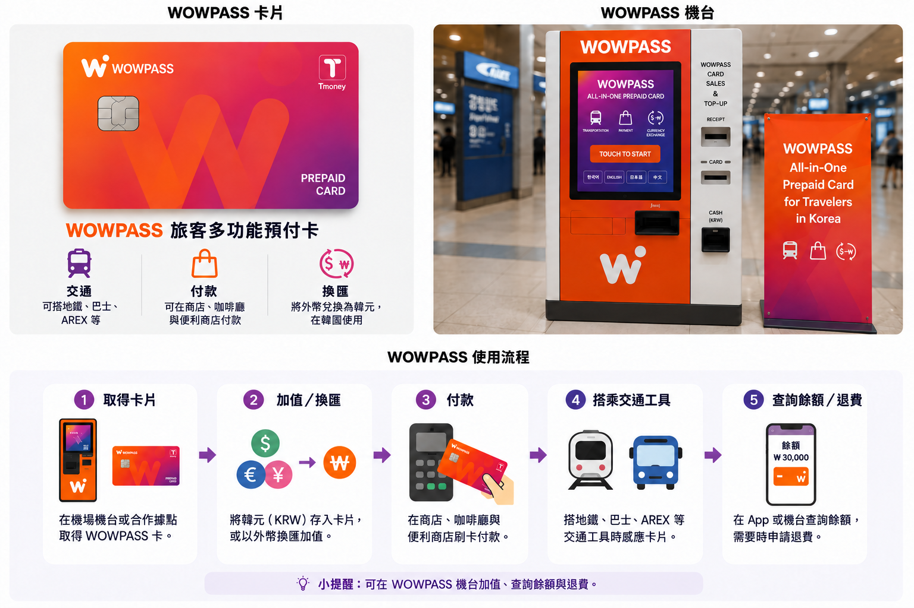
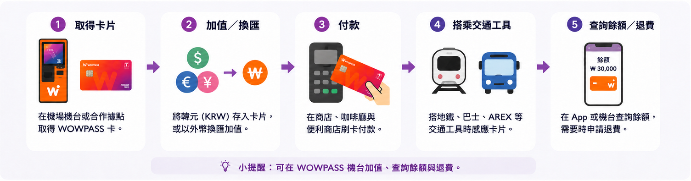

「儲了錢到 WOWPASS，地鐵卻說餘額不足。」
最可能的原因，是你儲了 WOWPASS 付款餘額，沒有儲到內建 T-money 餘額。兩者分開，請在 App 查看交通餘額，必要時儲值這一邊。
如果想把韓國預付式付款卡、換匯與 T-money 放在同一張實體卡上，WOWPASS 可能很方便。但「一體整合」容易讓人誤解：商店付款的錢，與搭公車、地鐵的錢，是兩種獨立餘額。
若只需要大眾運輸，一般 T-money 卡通常較簡單。還想要韓國付款餘額、支援的外幣儲值、現金提領，或 App 卡片管理功能時，WOWPASS 才更適合。

WOWPASS 把外國旅客在韓國常分開處理的幾件事整合在一起。
WOWPASS 餘額可作為一般購物的預付式付款餘額，卡內也有搭公車與地鐵的 T-money 交通功能。支援的 WOWPASS 機器可兌換外幣現鈔並儲值，App 則提供其他加值與卡片管理功能。
整合是吸引力所在，也往往是混淆的起點。
付款與交通功能共用同一張實體卡，但不共用餘額。把 ₩50,000 儲進 WOWPASS 付款餘額，不代表就有 ₩50,000 可搭地鐵。T-money 必須另外儲值。
理解這個差別，WOWPASS 其實不難用。如果期待一筆餘額能支付所有用途，第一次走到地鐵閘門就可能碰壁。
儲值之前，值得先弄懂這一點。


| WOWPASS 餘額 | T-money 餘額 | |
|---|---|---|
| 主要用途 | 商店、餐廳與其他實體刷卡付款 | 公車、地鐵與支援的交通服務 |
| 付款方式 | 將卡片 IC 晶片插入付款機 | 在交通讀卡機感應卡片 |
| 儲值方式 | WOWPASS 機器或支援的行動儲值方式 | 單獨儲值 T-money |
| 儲值另一種餘額，這邊也會增加嗎？ | 不會 | 不會 |
| App 支援 | 餘額、交易紀錄與卡片管理 | 餘額查詢與現行 App 儲值支援 |
WOWPASS 自己的指南明確區分兩種餘額：一般購物使用 WOWPASS 預付餘額，交通則使用內建的 T-money 餘額。
實際影響很簡單：商店付款成功，無法說明還剩多少錢能搭地鐵；T-money 餘額充足，也不能代表付款餘額足夠。
如果地鐵閘門顯示交通餘額不足，只儲值 WOWPASS 付款餘額無法解決問題。
在仁川機場，最重要的是依照預訂內容中顯示的實際地點前往。機場內部分便利商店據點設有 WOWPASS 自助機，因此「機場取卡」不一定代表由店員在櫃檯直接交卡。
截至 2026 年 10 月 5 日，WOWPASS 官方預訂頁面列有仁川機場第 1 航廈與第 2 航廈的 Airport CU Convenience Stores。官方機器搜尋也可看到設於機場 CU、GS25 等便利商店據點的 WOWPASS 自助機。不同地點提供的功能可能不同；下方 3 個據點可為 WOWPASS 儲值，但不提供外幣兌換或餘額提領。
預訂流程另列有 Airport SKT Roaming Center 的 WOWPASS + Tmoney + SIM Package，以及可在地鐵站、飯店、便利商店等地點領取的 Machine (Pre-booked)。目前官方頁面顯示標準卡價為 ₩6,000，所列卡片單獨預訂優惠價為 ₩5,500。價格、優惠、取卡方式與機器功能都可能變動，出發前請確認自己的最新預訂內容與官方機器搜尋。
拿到卡後，不要立刻儲入大筆金額。先在 WOWPASS App 登錄，確認正在儲值哪一種餘額，再加入預計會使用的金額。如果之後遺失卡片，事先完成 App 登錄也會很重要。


這裡有兩件容易混在一起的事：在 WOWPASS 機器兌換外幣現鈔，以及透過 App 儲值。
WOWPASS 目前宣傳支援 16 種貨幣現金儲值。現行官方網站的行動儲值服務，也列出國際卡與電子錢包支援，包括 Mastercard、JCB，以及經 PayPal 使用的 Visa。
在 WOWPASS 機器使用支援的外幣現鈔時，服務會將其兌換成韓元，再加入 WOWPASS 付款餘額。
行動儲值是另一條路徑，不是把外幣鈔票放進機器，而是在 App 透過支援的國際付款方式加值。
比較成本時，這個差別很重要。匯率與儲值費不一定是同一件事。大額儲值前，請看實際可取得的 KRW 金額，以及該方式顯示的費用，不要認定 WOWPASS 每種入金方式成本都一樣。

一般購物時，WOWPASS 比較像韓國預付卡，而不是交通卡。
官方指南說明，WOWPASS 付款餘額可在接受韓國國內信用卡或簽帳金融卡付款的實體商家使用，也包含部分海外卡可能刷不過的地方。這類購物的官方操作方式，是把卡片 IC 晶片插入商家讀卡機。
這與搭地鐵不同。
在商店、餐廳或咖啡廳，扣的是 WOWPASS 餘額；搭公車或地鐵時，感應卡片後扣的是獨立 T-money 餘額。
自助點餐機也要記得這點。看到感應符號，不代表每筆 WOWPASS 交易都該像 T-money 一樣用感應完成。
WOWPASS 的行銷有時會用很廣泛的接受範圍描述。規劃旅行時，較穩妥的理解是韓國實體店預付付款卡，不能保證每個網路結帳、外國網站或特殊付款設備都接受。
商家付款失敗時，請準備 另一種付款方式，不要反覆在餘額之間移動資金。
WOWPASS 也能透過支援的 WOWPASS 機器，把部分付款餘額換回韓元現金。
現行官方網站說明，每筆最多提領 ₩100,000，每次收取 ₩1,000 手續費，並可重複提領。這些是現行服務條款，未來旅行要依賴這項功能前，應再次確認。
重要差別在於，這是透過 WOWPASS 系統提領 WOWPASS 餘額，不等於擁有韓國銀行帳戶，也不代表能不受限制地使用韓國 ATM。
偶爾需要韓元現金的旅客，這可能很實用；長期停留時，則不宜把 WOWPASS 當成所有銀行或 ATM 需求的替代品。
WOWPASS 內建的交通功能，使用的確實是 T-money。
WOWPASS 官方指南說明，其 T-money 餘額可用於韓國地鐵與公車，並指示旅客在交通讀卡機感應卡片。目前也宣傳鐵路與公車以外的交通用途，包括支援的計程車。
關鍵是「餘額」。
錢包裡有 WOWPASS 卡，不代表交通功能已儲值。T-money 餘額本身必須足夠。
App 目前可顯示交通卡餘額，也支援餘額偏低時加值。
每天搭火車與公車的旅客通常不必再帶第二張實體 T-money 卡，這很方便。但方便不代表底層餘額合併了；仍要記得哪一筆錢支付旅程的哪個部分。
App 在實際旅途中，比乍看之下更有用。
它可顯示 WOWPASS 付款餘額與交易活動，目前公司也透過 App 提供即時付款通知。使用者還能查看內建交通卡餘額並儲值。
最重要的功能比較不起眼：卡片安全。
WOWPASS 說明，卡片遺失或遭竊時，可在 App 暫停以保護 WOWPASS 餘額，之後再辦理補卡。
這也是拿到實體卡後就盡快登錄 App 的充分理由，不必等出問題才處理。
App 目前也支援 WOWPASS 使用者之間轉移餘額。朋友同行時可能方便，但相較之下，掌握花費、管理卡片與保護付款餘額，才是更基本的用途。
旅行卡不見已經很麻煩；裡面還有大筆預付餘額，就更需要處理。
如果 WOWPASS 不見，先開 App 暫停卡片。WOWPASS 目前說明，這可保護剩餘 WOWPASS 餘額，並讓使用者辦理補卡。
不要認定卡片各部分都用完全相同的方式恢復。WOWPASS 的使用指南本來就把預付餘額與 T-money 功能分開，因此遺失補卡時，交通餘額應如何處理，要查閱現行客服指示。
這也是不宜儲值遠超過預計用量的另一個理由。
旅程結束時，WOWPASS 卡可能有兩處還有錢：WOWPASS 付款餘額與 T-money 交通餘額。
這兩種餘額不應當成同一筆退款。
WOWPASS 官方使用指南分別提供 WOWPASS 餘額提領與 T-money 退款功能，正是旅途中同樣適用的雙餘額結構。
最後一次前往機場前，分別查看兩種餘額。
如果還要搭地鐵或機場交通，T-money 留足那趟車資。WOWPASS 付款餘額若剩太多，抵達機場前先查現行提領說明。
不要拖到出發前最後幾分鐘。退款或現金提領點，不一定在想像的位置。
最可能的原因，是你儲了 WOWPASS 付款餘額，沒有儲到內建 T-money 餘額。兩者分開，請在 App 查看交通餘額，必要時儲值這一邊。
不要預設一定由店員在櫃檯交卡。仁川機場部分便利商店據點設有 WOWPASS 自助機。請依照自己預訂所附的實際指示，並在最新官方機器搜尋確認位置；不同地點的設置方式與可用功能可能不同。
兩者都能增加可用餘額，但入金方式不同。支援的外幣現鈔走機器換匯流程；支援的國際卡或電子錢包，則可透過現行行動儲值方式使用。
地鐵使用的是 T-money 功能，商店使用的是 WOWPASS 預付功能。先確認正確的餘額；若餘額足夠，商家仍無法處理卡片，請改用其他付款方式，不要因交通交易成功，就認定所有零售付款都必須成功。
一般 WOWPASS 購物的官方操作方式，是把 IC 晶片插入讀卡機。感應是交通用途的操作方式。
盡快在 App 暫停。WOWPASS 目前支援停卡與補卡，以保護 WOWPASS 餘額。接著依現行客服流程補卡，並確認獨立 T-money 餘額如何處理。
分開處理。WOWPASS 付款餘額有自己的提領流程，T-money 也有自己的退款流程。最後一趟機場交通前，兩者都先確認。
同時有幾種需求時，WOWPASS 最有用。
預計搭大眾運輸、想用韓國預付卡處理日常購物，也想方便兌換支援的外幣現鈔或透過 App 儲值的旅客，只帶一張實體卡，可能比每項功能分開安排更有價值。
如果希望把明確的旅行預算放進預付餘額，而不想每筆小額消費都動用主要海外信用卡，也可能適合。
若海外卡在韓國已穩定可用，只缺一張交通卡，這張卡的必要性就低很多。這時多加 WOWPASS，等於多一個 App、一種餘額，以及一套要了解的卡片系統。
只在首爾待三天、只需要搭地鐵的旅客，不會只因功能更多就一定更方便。
一般 T-money 卡只需少量設定，就能完成一件重要的事：搭乘交通工具。
WOWPASS 把 T-money 放進功能更廣的付款產品，可省去分別攜帶付款卡與交通卡。但只有也打算使用付款、換匯、提領或 App 管理功能時，這種便利才最明顯。
如果仍在這兩張卡之間選擇，請看 T-money 與 WOWPASS 比較指南，完整比較已整理在那裡，這裡不再重複。
如果已確定只需要大眾運輸： T-money 指南
不一樣。WOWPASS 是給外國旅客使用的預付式付款卡，也內建 T-money 交通功能。WOWPASS 付款餘額與 T-money 餘額分開。
可以。內建的 T-money 功能可用於韓國大眾運輸，但 T-money 餘額須與 WOWPASS 付款餘額分開儲值。
一般搭公車與地鐵通常不需要。WOWPASS 已內建 T-money 交通功能。但若只需要交通用途，單獨的 T-money 卡可能更簡單。
不會。WOWPASS 付款餘額與 T-money 餘額是分開的。要靠這張卡搭車前，先確認交通餘額。
官方指南說明，WOWPASS 付款餘額可在接受韓國國內信用卡或簽帳金融卡付款的實體商家使用。一般付款採插入卡片 IC 晶片的方式。
不要因為 WOWPASS 實體店付款成功，就認定韓國網路結帳也一定接受。官方使用指南明確說明的是實體商家付款。韓國網路付款問題，請另看 Korea Inside 網路付款指南。
WOWPASS 目前支援 16 種貨幣現金儲值，須依現行機器與貨幣規則。確認交易前，先看顯示的兌換金額。
WOWPASS 目前宣傳可透過國際卡與電子錢包行動儲值，官方網站列出 Mastercard、JCB，以及經 PayPal 使用的 Visa。大額儲值前，請在 App 確認目前可用方式與費用。
可以。目前官方預訂頁面列有第 1 航廈與第 2 航廈的 Airport CU Convenience Stores，官方機器搜尋也顯示 CU、GS25 等機場便利商店據點設有 WOWPASS 自助機。另外還有獨立的 Airport SKT Roaming Center WOWPASS + Tmoney + SIM Package 選項。請依自己的預訂與最新機器搜尋確認實際地點、取卡方式與可用功能。
截至本次 2026 年 10 月 5 日查核，官方預訂頁面顯示標準卡價為 ₩6,000，所列卡片單獨預訂優惠價為 ₩5,500。價格與優惠可能變動。
可以。現行官方網站說明，WOWPASS 機器可從卡片餘額提領 KRW，目前每次最多 ₩100,000，每次手續費 ₩1,000。服務條件可能變動，出發前請再確認。
若卡片已登錄 App，WOWPASS 目前可暫停卡片以保護 WOWPASS 餘額，並提供補卡流程。獨立的 T-money 餘額如何處理，請查現行客服指示。
可能值得，但怎麼付款比旅行天數更重要。若想同時使用付款、交通與換匯功能，短途也可能實用。如果只需要公車與地鐵，一般 T-money 卡更簡單。
最近查核：2026 年 10 月 5 日
匯率、費用、取卡地點、支援的入金方式與服務規則可能變動。涉及金錢或特定機器時，現行 WOWPASS App 或官方網站，應優先於舊截圖或旅遊文章。